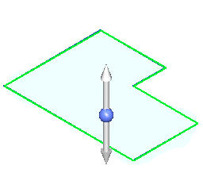
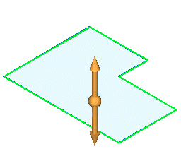
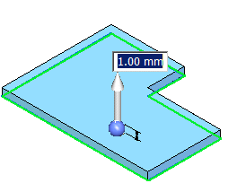
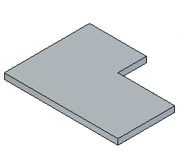
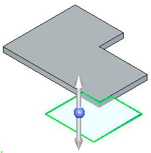
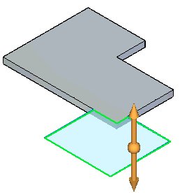
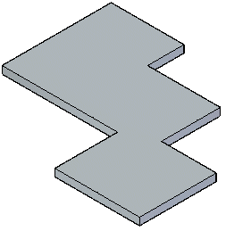

Construct a tab
You can construct a tab as a base feature or add a tab to an existing sheet metal part.
Construct a tab in the ordered environment
-
Choose Home tab→Sheet Metal group→Tab .
Note:You can also right-click an existing sketch region and select the command from the context toolbar.
-
Define the profile plane.
-
Draw an open profile in any 2D shape or copy a profile into the profile window. The ends of an open profile are extended to the edges of the part plane. An arc with open ends is extended to form a circle.
Note:If you are using the Tab command to construct a base feature, the profile must be closed.
-
Choose Home tab→Close group→Close.
-
Finish the feature.
Construct a tab as a base feature in the synchronous environment
-
Position the cursor over a sketch region, then click to select it.
The extrude handle is displayed.

-
Click the Extrude handle.

-
Type a thickness value for the part.

-
Right-click to create the tab.

-
You can choose the Material Table button on the command bar to display the Solid Edge Material Table dialog box to make changes to things such as global thickness, bend relief, and relief depth.
-
You can click the direction indicator handle to change the offset direction.
Add a tab to an existing sheet metal part in the synchronous environment
-
Position the cursor over a sketch region, then click to select it.
The extrude handle displays.

-
Click the Extrude handle.

The tab is automatically added.

How do I
Construct a sheet metal base featureConstruct a lofted flange
Learn more
Construct the base featureLook up more details
Tab commandTab command bar
Lofted Flange command
Lofted Flange command bar
Lofted Flange Options dialog box
General tab (Lofted Flange)
Bending Method page
Vertex Mapping dialog box